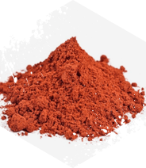

The secret lies in our
breakthrough Vitamin H formula

Here at Vita Rose Health, we’re always looking for the latest science breakthroughs to help women with their health.
And when we caught wind of the research behind this incredible nutrient, we immediately set out to create a formula centered around it…
Because the science was incredibly exciting, to say the least!
A study done at the University of California in Los Angeles (UCLA) gave women with thinning hair either a placebo or a supplement containing vitamin H.
After just 90 days, the women who took vitamin H reported significantly less hair shedding…
More hair growth…

And there were ZERO side-effects!
In other words, this study found that vitamin H supports healthy hair growth and was totally safe to use.
Another study published in The Journal of Clinical and Aesthetic Dermatology was done on women with thinning hair.
This group included women up to 75 years old…
And after a vitamin H supplement for 90 days, they reported better overall hair volume, and more scalp coverage!

The women even reported the wonderful bonuses of shinier hair, smoother skin, and better skin moisture.
Wow!
Again, the researchers found no negative side effects.
That’s why vitamin H is the first ingredient in Vita Rose Hair, Skin, and Nails.
But that’s not all…
We’ve also included known nutrients that support healthy hair growth, like…
Vita Rose Hair, Skin, and Nails Component 2:

Biotin is a popular hair, skin, and nails supplement trusted by thousands of women and hair products all over the world.
That’s because it flat out works.
Not only does it support healthy hair, skin, and nail growth…
It also supports healthy brain function…
Healthy blood sugar…
And healthy cholesterol levels!
That’s why we included biotin in our breakthrough formula.
And we didn’t stop there…
We also included collagen, a nutrient that is essential for women in their 40s and 50s…
Because collagen makes up three quarters of the protein content of your hair, skin, and nails…
And many women lose up to 30% of their collagen production during menopause!
This has been directly linked to fine lines… wrinkles… and other signs of aging.
Adding a collagen supplement to the diet has been scientifically shown to help with this…
Which is why it’s the next ingredient inside Vita Rose Hair, Skin, and Nails.
Yet there’s still more to this incredible formula…
Vita Rose Hair, Skin, and Nails Component 3:
The next ingredients of Vita Rose Hair, Skin, and Nails deal with the most common vitamin
deficiencies for menopausal women.
They include:
-
Vitamin C for healthy iron absorption
-
Vitamin E for skin health
-
Vitamin B5 to support healthy hair, skin, eyes, and digestion
-
Vitamin B6 to support a healthy mood (and even help with PMS symptoms!)

It’s a mixture of vitamins that does wonders for the hair, skin, and nails of women going through menopause.
Truthfully, we could’ve stopped there…
And Vita Rose Hair, Skin, and Nails would’ve still been an incredible supplement for women in their 40s, 50s, and beyond.
Yet we wanted to go above and beyond…
To make sure you’re completely satisfied with how amazing your hair looks…
How quickly your nails grow…
And how smooth and radiant your skin is.
That’s why we included the last key ingredient…
Vita Rose Hair, Skin, and Nails Component 4:
That’s right…
We included a mixture full of the most beneficial herbs and superfoods for women’s hair, skin,
and nails!
Including:
-
Gotu Kola, an herb that supports healthy collagen production in the body… and can even help the appearance of stretch marks!
-

Astaxanthin, a nutrient found in the ocean that’s filled with omega-3s that helps smooth wrinkles, make age spots smaller, and helps maintain skin moisture
-

Goji berries,a superfood filled with antioxidants for your eyes and skin… and it’s a great source of vitamin A, iron, and zinc

Can you see how this incredible formula is packed with the perfect ingredients to help menopausal
women look and feel their best?
Vita Rose Hair, Skin, and Nails’
ingredients are safe and all-natural
And it’s formulated in our GMP-certified
US-based facility to ensure premium quality

Just take 2 capsules a day with your meals…
And enjoy as your hair grows thicker and shinier…
Your skin gets smoother and healthier…
And your nails strengthen.
Just imagine how great it’ll feel when friends and family comment on the new look!
If you’re ready to get started, click the button below to grab your bottles of Vita Rose Hair, Skin, and Nails today.
As you can imagine, this incredible formula is flying off our shelves…

And due to the premium ingredients sourced from around the world, our warehouse stock is often quite low!
Which is why we recommend grabbing 6 bottles to make sure you’re covered, even if we run out.
Many women also love the discount they get buying in bulk...
And we couldn’t agree more with their smart decision to both save money and keep their bodies healthy.
So click the button below to grab yours today!